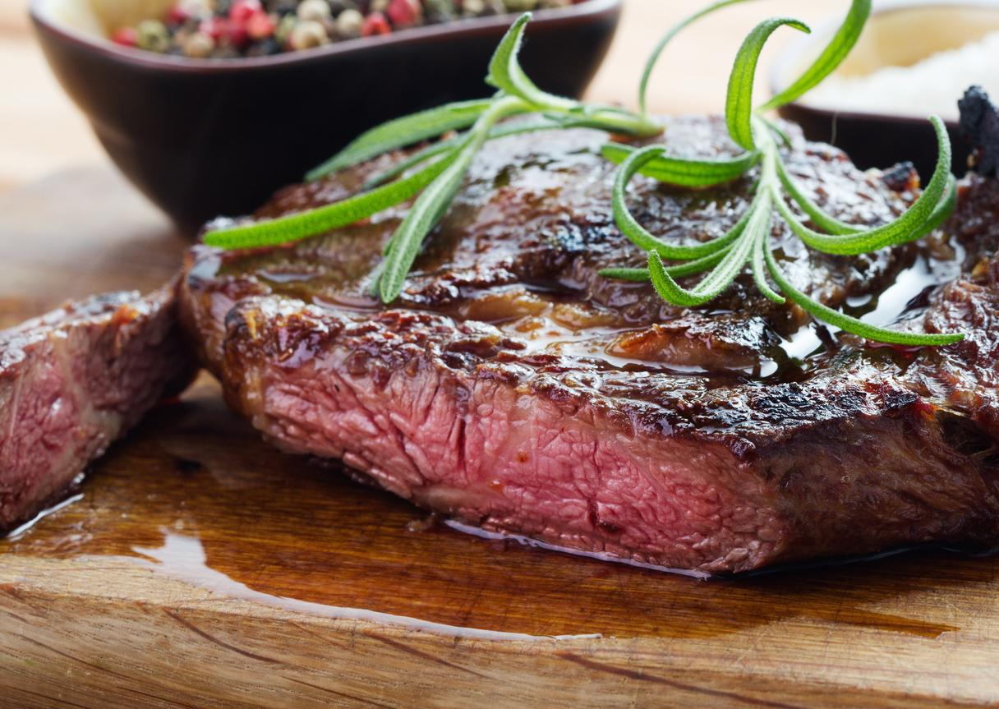

Ingredients
- 200 grams(7 ounces) Beef tenderloin
- 1/2 tablespoon Butter
- 1/2 tablespoon Minced garlic
- Olive Oil
- Salt
- Pepper
- Thyme
Instructions
- Put your pan on the stove and heat it on medium heat.
- Season the steak with salt and pepper and spread evenly.
- Put some olive oil onto the pan.
- Place your meat onto the pan.
- After 30 seconds, use a pair of tongs and turn the steak over. Turn the steak every 1 minute to ensure heat is distributed evenly.
- Add butter, garlic, and thyme.
- Tilt the pan and baste the steak.
- Rest the steak and enjoy!